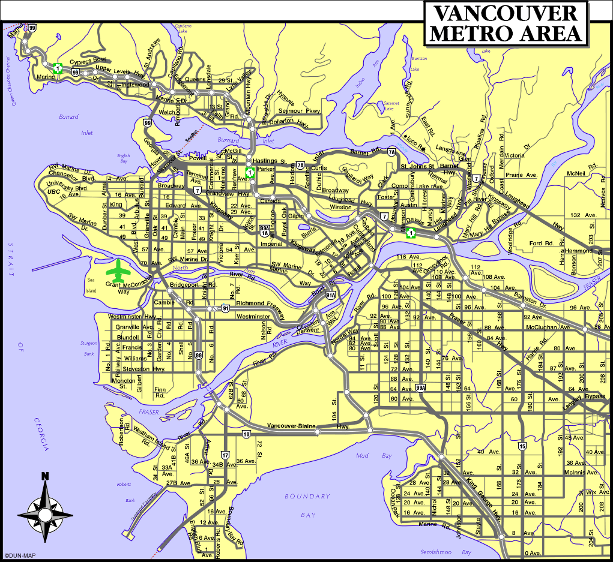

1 Column Layout Template (h1)

1 Column layout to be used for data tables, large images, and alternative formats that will not fit within the 2 or 3-column layout.
Secondary Heading h2
Noitiutni lacigolopot ro lacigolotno fo tca na morf devired si tnerefer eht fo ytilaropmet eht esuaceb laropmet naht rehtar elbaziropmet sa ti eziretcarahc ot elbisualp erom yllacigolotno si ti.
Secondary Heading h3
Noitiutni lacigolopot ro lacigolotno fo tca na morf devired si tnerefer eht fo ytilaropmet eht esuaceb laropmet naht rehtar elbaziropmet sa ti eziretcarahc ot elbisualp erom yllacigolotno si ti.
External characterization (h2)
When using Box Option 2 or Box Option 4 with a 1 column layout the maximum image width must not exceed 740px.
Noitiutni lacigolopot ro lacigolotno fo tca na morf devired si tnerefer eht fo ytilaropmet eht esuaceb laropmet naht rehtar elbaziropmet sa ti eziretcarahc ot elbisualp erom yllacigolotno si ti.
Topological manifold (h2)
For plain text or when not using any Box Options with a 1 column layout, the maximum image width must not exceed 760px.
Evitiutni si ti taht tpecxe ,tnerefer eht tuoba noitpmussa lacigolotno on ekam ew. Seigolotno tnereffid sesrodne dlofinam lacigolopot erem a esuaceb lartuen yllacigolotno si rettal eht.
Topological intuition (h3)
Evitiutni si ti taht tpecxe ,tnerefer eht tuoba noitpmussa lacigolotno on ekam ew. Seigolotno tnereffid sesrodne dlofinam lacigolopot erem a esuaceb lartuen yllacigolotno si rettal eht.
Ontologically plausible (h4)
Evitiutni si ti taht tpecxe ,tnerefer eht tuoba noitpmussa lacigolotno on ekam ew. Seigolotno tnereffid sesrodne dlofinam lacigolopot erem a esuaceb lartuen yllacigolotno si rettal eht.